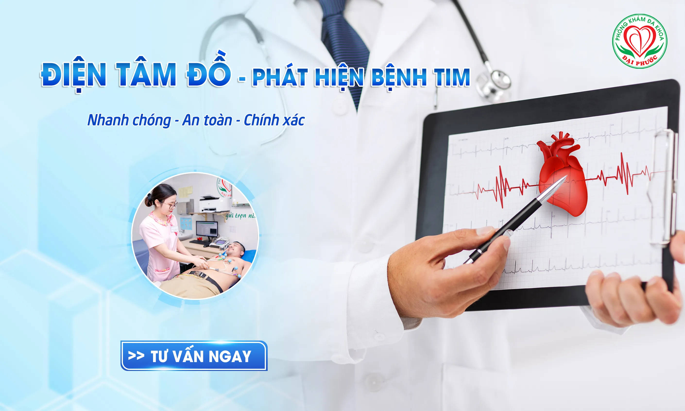
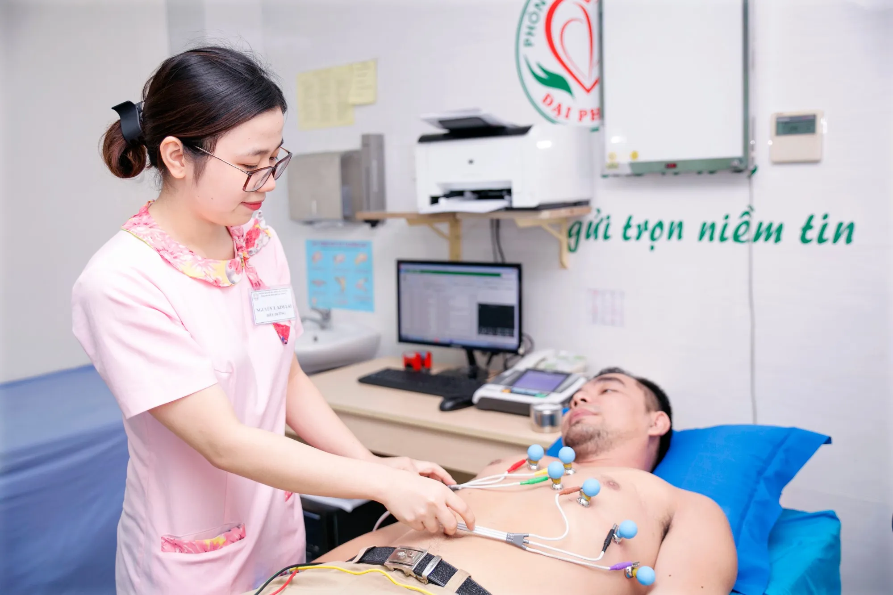

MÁY ĐIỆN TIM - PHÁT HIỆN BỆNH TIM QUA THỦ THUẬT ĐƠN GIẢN
Điện tâm đồ là gì và tại sao quan trọng?
Điện tâm đồ (ECG/EKG) là một phương pháp ghi nhận hoạt động điện của tim qua các điện cực đặt trên da. Đây là thủ thuật không xâm lấn, không gây đau và cho kết quả nhanh chóng, giúp bác sĩ tim mạch phát hiện nhiều bất thường về nhịp tim, cấu trúc và chức năng cơ tim.
Mỗi nhịp tim tạo ra một xung điện lan truyền qua hệ thống dẫn truyền của tim. Máy điện tim ghi lại các xung điện này dưới dạng đồ thị, từ đó bác sĩ có thể đánh giá tim đang hoạt động bình thường hay có dấu hiệu bệnh lý.
Khi nào cần làm điện tâm đồ?
Bác sĩ chuyên khoa tim mạch thường chỉ định điện tâm đồ trong các tình huống:
Triệu chứng cảnh báo:
- Đau ngực, tức ngực hoặc khó thở
- Tim đập nhanh, hồi hộp hoặc nhịp tim không đều
- Chóng mặt, ngất xỉu hoặc cảm giác tim bỏ nhịp
- Mệt mỏi bất thường kéo dài
Khám sức khỏe định kỳ:
- Người trên 40 tuổi nên thực hiện điện tâm đồ định kỳ hàng năm
- Có tiền sử gia đình mắc bệnh tim mạch
- Trước khi phẫu thuật hoặc tham gia hoạt động thể thao cường độ cao
- Theo dõi hiệu quả điều trị bệnh tim
Các yếu tố nguy cơ:
- Tăng huyết áp, đái tháo đường, rối loạn lipid máu
- Hút thuốc lá, béo phì, ít vận động
- Đang dùng các thuốc có thể ảnh hưởng đến nhịp tim
 Bác sĩ chuyên khoa tim mạch tư vấn chi tiết cho bệnh nhân về chỉ định và quy trình thực hiện điện tâm đồ
Bác sĩ chuyên khoa tim mạch tư vấn chi tiết cho bệnh nhân về chỉ định và quy trình thực hiện điện tâm đồ
Quy trình thực hiện điện tâm đồ
Chuẩn bị trước khi làm
Không cần nhịn ăn: Khác với nhiều xét nghiệm khác, người bệnh có thể ăn uống bình thường trước khi làm điện tâm đồ.
Trang phục phù hợp: Nên mặc quần áo rộng rãi, dễ cởi để thuận tiện cho việc đặt điện cực.
Thông báo với bác sĩ về:
- Các loại thuốc đang sử dụng
- Tiền sử bệnh tim hoặc bệnh lý mạn tính
- Máy tạo nhịp tim hoặc thiết bị y tế cấy ghép (nếu có)
Các bước tiến hành
- Chuẩn bị: Người bệnh được yêu cầu cởi áo và nằm ngửa thoải mái trên giường khám
- Đặt điện cực: Kỹ thuật viên sẽ đặt khoảng 10 điện cực dạng miếng dán lên ngực, cổ tay và mắt cá chân. Vị trí đặt điện cực được chuẩn hóa quốc tế để đảm bảo kết quả chính xác
- Ghi nhận tín hiệu: Máy điện tim ghi lại hoạt động điện của tim trong khoảng 5-10 giây. Người bệnh cần nằm yên, thở bình thường và không nói chuyện
- Hoàn tất: Sau khi ghi xong, điện cực được gỡ bỏ và người bệnh có thể về ngay

Toàn bộ quá trình thường mất khoảng 3-5 phút.
Điện tâm đồ phát hiện được những bệnh gì?
Rối loạn nhịp tim (Arrhythmia):
- Nhịp tim nhanh (trên 100 nhịp/phút lúc nghỉ)
- Nhịp tim chậm (dưới 60 nhịp/phút)
- Rung nhĩ, cuồng nhĩ hoặc các rối loạn nhịp nguy hiểm khác
Thiếu máu cơ tim và nhồi máu cơ tim: Điện tâm đồ có thể phát hiện dấu hiệu cơ tim đang bị thiếu máu hoặc đã bị tổn thương do nhồi máu, ngay cả khi người bệnh không có triệu chứng.
Dày cơ tim: Phì đại thất trái hoặc thất phải do tăng huyết áp, bệnh van tim hoặc các nguyên nhân khác.
Bất thường điện giải: Rối loạn kali, canxi hoặc magie trong máu có thể gây thay đổi hình thái sóng điện tim.
Tác dụng phụ của thuốc: Một số loại thuốc có thể gây kéo dài khoảng QT trên điện tâm đồ, làm tăng nguy cơ loạn nhịp nguy hiểm.
Các loại điện tâm đồ
Điện tâm đồ 12 chuyển đạo thường qui
Đây là loại phổ biến nhất, ghi nhận hoạt động điện của tim từ 12 góc độ khác nhau, cung cấp bức tranh toàn diện về hoạt động điện học của tim.
Điện tâm đồ gắng sức
Người bệnh chạy trên máy chạy bộ hoặc đạp xe trong khi ghi điện tâm đồ, giúp đánh giá tim hoạt động như thế nào khi gắng sức.
Điện tâm đồ Holter
Thiết bị nhỏ gọn được đeo trong 24-48 giờ để ghi liên tục hoạt động tim, phát hiện rối loạn nhịp không thường xuyên.
Điện tâm đồ sự kiện
Tương tự Holter nhưng người bệnh chỉ kích hoạt ghi khi có triệu chứng, thường đeo trong vài tuần.
Xem thêm: Chẩn đoán bệnh tim mạch bằng máy đo điện tâm đồ Cadisco 306
Giải đoán kết quả điện tâm đồ
Sau khi ghi, bác sĩ tim mạch sẽ phân tích các thành phần:
Sóng P: Phản ánh hoạt động của nhĩ Đoạn PR: Thời gian dẫn truyền từ nhĩ xuống thất Phức bộ QRS: Phản ánh hoạt động co bóp của thất Đoạn ST: Rất quan trọng trong chẩn đoán thiếu máu cơ tim Sóng T: Phản ánh quá trình tái cực của thất
Mỗi thành phần này cung cấp thông tin cụ thể về cấu trúc và chức năng tim. Bất thường ở bất kỳ thành phần nào cũng có thể chỉ ra vấn đề sức khỏe cần được xử lý.
Hạn chế của điện tâm đồ
Mặc dù hữu ích, điện tâm đồ có một số hạn chế:
- Chỉ ghi nhận hoạt động điện, không đánh giá cấu trúc giải phẫu tim
- Có thể bình thường ngay cả khi có bệnh tim (đặc biệt khi không có triệu chứng tại thời điểm ghi)
- Một số bất thường trên điện tâm đồ có thể không có ý nghĩa lâm sàng
Vì vậy, bác sĩ thường kết hợp điện tâm đồ với các xét nghiệm khác như siêu âm tim, xét nghiệm máu hoặc chụp mạch vành để có chẩn đoán chính xác.
Điện tâm đồ có an toàn không?
Điện tâm đồ là thủ thuật hoàn toàn an toàn:
- Không xâm lấn, không gây đau
- Không có bức xạ
- Máy chỉ ghi nhận tín hiệu điện, không phát điện vào cơ thể
- Có thể thực hiện an toàn cho phụ nữ mang thai, trẻ em và người cao tuổi
Chi phí và nơi thực hiện
Điện tâm đồ có thể được thực hiện tại:
- Phòng khám đa khoa
- Bệnh viện
- Trung tâm tim mạch chuyên khoa
- Một số phòng khám có dịch vụ khám tại nhà
Chi phí thay đổi tùy cơ sở y tế, thường được bảo hiểm y tế chi trả khi có chỉ định của bác sĩ.
Câu hỏi thường gặp
Cần chuẩn bị gì trước khi làm điện tâm đồ?
Không cần chuẩn bị đặc biệt. Có thể ăn uống bình thường, tuy nhiên nên tránh sử dụng kem dưỡng da hoặc dầu ở vùng ngực trước khi làm để điện cực bám tốt hơn.
Điện tâm đồ bao lâu có kết quả?
Kết quả thường có ngay sau khi thực hiện. Bác sĩ sẽ phân tích và giải thích kết quả trong vòng vài phút
Có nên làm điện tâm đồ định kỳ không?
Người khỏe mạnh không có yếu tố nguy cơ có thể không cần làm thường xuyên. Tuy nhiên, người trên 40 tuổi, có yếu tố nguy cơ hoặc triệu chứng tim mạch nên trao đổi với bác sĩ về tần suất khám phù hợp.
Kết luận
Điện tâm đồ là công cụ chẩn đoán quan trọng, đơn giản và an toàn giúp phát hiện sớm nhiều bệnh lý tim mạch. Với thời gian thực hiện nhanh chóng và không gây đau, đây là xét nghiệm nên được thực hiện định kỳ, đặc biệt với những người có yếu tố nguy cơ hoặc triệu chứng tim mạch. Kết quả điện tâm đồ kết hợp với khám lâm sàng và các xét nghiệm khác sẽ giúp bác sĩ chuyên khoa tim mạch đưa ra chẩn đoán chính xác và phương án điều trị phù hợp nhất.

Các tin khác

ĐĂNG KÝ NHẬN BẢN TIN

Phòng Khám Đa Khoa Đại Phước
- 829 đường 3 tháng 2, Phường Minh Phụng, Thành phố Hồ Chí Minh
- 1900 599 941 - 0938 829 831
- (028) 3955 7999
- info@ytedaiphuoc.vn
-

6:00 - 11:30 (Chủ Nhật)


GPKD số : 0312023683 cấp ngày: 29/10/2012 Bởi Sở Kế Hoạch và Đầu Tư TP.Hồ Chí Minh
Đại diện: Tống Nguyễn Diễm Hồng